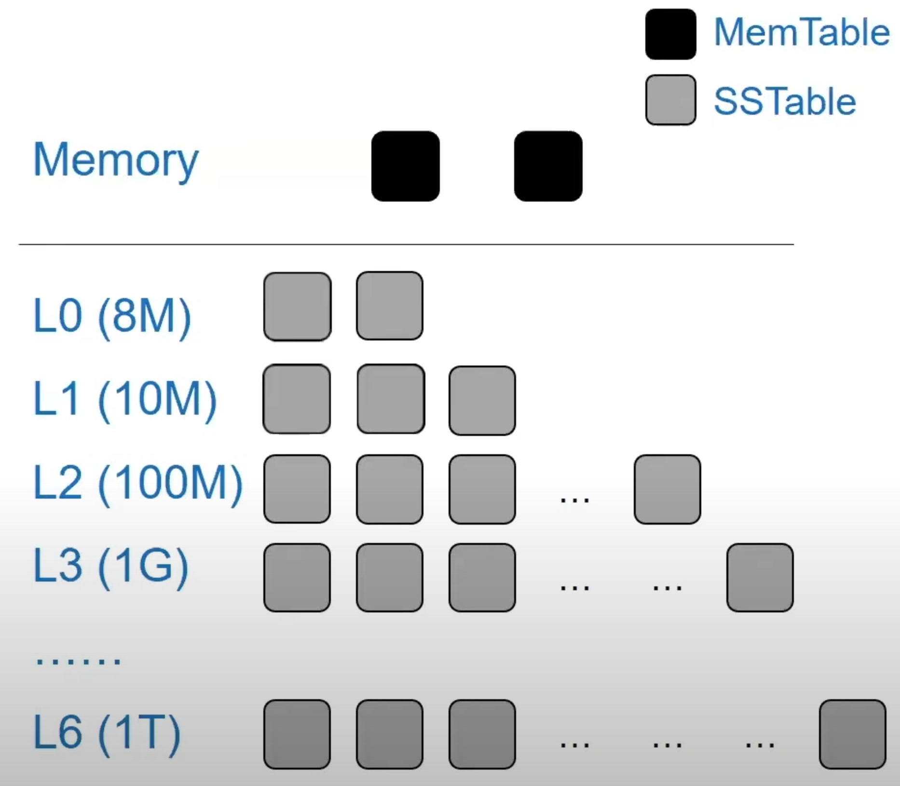

This week we look at yet another paper about learned index. This paper also appears in OSDI’20. It is not the first time I see conferences accept multiple papers that have relevant contents. I am curious if the decision of accepting a paper is relevant to the topic of it other than purely the quality, a similar thing to diversity. Do conferences take care of topic diversity or the papers are solely judged by the quality of it. Somebody could do an analysis of acceptance rate by topic for each conference each year (maybe using NLP techniques to understand the content of a paper). Coming back to the paper, it is a work from Remzi’s group in U of Wisconsin - Madison. Different from the paper last week, this one focuses on the implementation in LevelDB with LSM-Tree as opposed to B+ Tree before.
Motivation
- Learned Index
- Data lookup performance (latency) is sensitive in very large data sets.
B-Treeis a index data structure that records the position of a piece of data in a (partially) sorted array.- Learned index use ML to map
Key=position(learned index). The original model is LRf(x)=ax+b(yes only 2 weights).
- Problem 1: Model needs to be retrained upon data writes.
- Problem 2: How to integrate this into production system (not sorted array but complex tree data structures).
Design (Bourbon)
- A learned index for
LSM-Tree- Why
LSM-Tree? Immutable SSTables - LevelDB uses
LSM-Tree. There’s no updates to SSTables. They only get deleted during compaction. They are always compacted/merged to the next level if the previous level is filled. The model needs to be retrained when a level data is changed <-> retrain at every data writes.
- Why
- How and when to learn the SSTables
- Lower-level tables live longer (less frequently we need to retrain the model)
- Higher-level tables are more valuable because they are the ones that are frequently queried
- Guildline:
- Prefer to model lower-level tables, and wait some time for the tables to be stable
- Also learn higher-level tables, and workload/data-aware technique is needed
- Greedy Piecewise Linear Regression @VLDB’14
- Bourbon uses this algorithm which is basically mulitple linear segments to predict the position within an error bound
- (bad point) Not so sure why they use this method instead of simple LR
- WiscKey
- A previous work that seperates Key and Value to reduce the
LSM-Treesize - Each node in the
LSM-Treeis(Key, value_addr) - Lookup time: 4us
- Burbon reduces time to 2-3us (
LSM-Treelookup times)
- A previous work that seperates Key and Value to reduce the
- Runtime analysis on trade-offs
- Learn (CPU cost) vs No-learn (Lookup cost)
- CPU cost is estimated by the table size (larger table has more datapoints to learn)
- Lookup cost is estimated by baseline lookup time vs model lookup time multiply by how many lookups served (history data monitored)
- If write-intensive, No-learn is better (model change all the time -> learning cost is high, less lookups -> no benefit)
- If read-intensive, Learn is better
Evaluation
- All experiments are comparing WiscKey vs Bourbon
- Microbenchmark: 100% Uniform reads on different datasets
- Microbenchmark: 100% read with different distributions (Uniform, seq, Zipfian, etc.)
- Macrobenchmark: YCSB
- (bad point) There is no comparison between different models (accuracy and speed) -> why use Greedy PLR vs LR?
Comment
This paper is very similar to the previous one. Both are adopting learned index in KV Stores. The difference is with different KV Store implementation (B+ Tree vs LSM-Tree) and different motivation (save client caching size vs improve the lookup time). Somehow these two papers could combine to strategically learn model when needed (this paper) and send to client to reduce the model update overhead (previous paper).